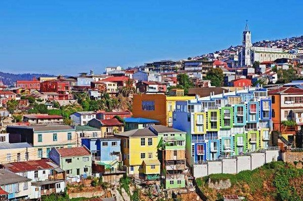
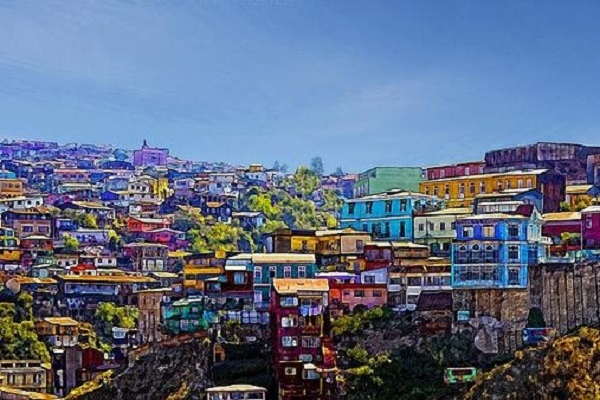
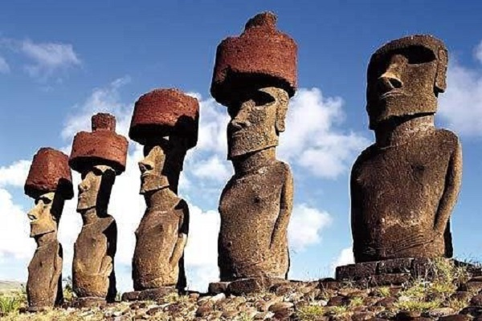
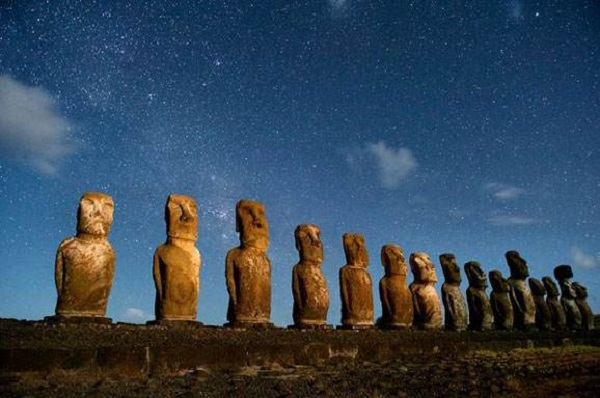
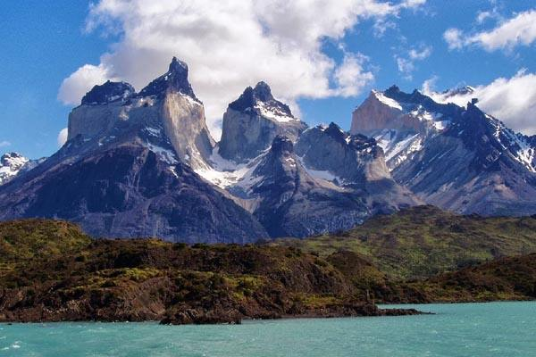

morly旅游网
这里有地球上有人居住岛屿中最偏远且一直以来几乎与世隔绝的孤零零小岛，这里有千百年来的未解之谜！
这里有漫天璀璨的星空，还记得当年大火的《来自星星的你》里面，都教授送给千颂伊弟弟一张星空图，告诉他那里是最适合看星星的地方吗？那张图就是在这里拍摄的！而且这里还有开出花海的沙漠……
智利是世界上地形最狭长的国家，长度：相当于从黑龙江北部一直到西沙群岛的长度宽度：宽度却很小，大概是上海到杭州的距离。从北到南，你可能会历经沙漠、冰川、火山、森林，从湿润到干燥，从孤独到喧嚣。
所以，从地图上看，整个智利就像是南美洲的美丽“群边”。看似面积不大的国土因为足够长，所以，整整横跨了38个维度。
圣地亚哥
智利首都圣地亚哥是一座拥有400年历史的古城，前临马波乔河，东依安第斯山，市容绮丽多姿。一年四季棕榈婆娑。向东是绵延的安第斯山脉，向西是清新宜人的葡萄园与酒庄。
瓦尔帕莱索
瓦尔帕莱索的精髓肯定不在著名博物馆里，历史可以陈列存档却不能长期保鲜，只有走进了色彩绚烂的街区，走进风情万种的小店，才能感受这座小城原始韵味。
 复活岛
复活岛世界闻名，同时也让人疑云密布，直到后来，去了一次镇上的博物馆，看了一本关于复活节岛的书籍才知道了个大概，原来复活节岛的原名是“拉帕努伊岛（Rapa Nui）”！这个岛上的原始居民对自己的故乡却另有称呼，他们称之为"吉·比依奥·吉·赫努阿"，即"世界中心"的意思，而波利尼亚人以及太平洋诸岛的土著居民称它为"拉帕一努依"(RaPa Nui)，这个名称更令人费解，也颇含神秘色彩，因为直译过来就是"地球的肚脐"。
 百内国家公园
百内国家公园主要以湖泊、冰川和花岗岩山峰以及本地特有的动物闻名于世。它曾经被国家地理杂志评为“50个一生必须要去的地方”之一，也拥有“世界上最具视觉吸引力的地方”之称，有了这些头衔基本可以想象这里的景色一定是一等一的棒了。
内容整理至网络，如有侵权，请联系我们！1255394075@qq.com